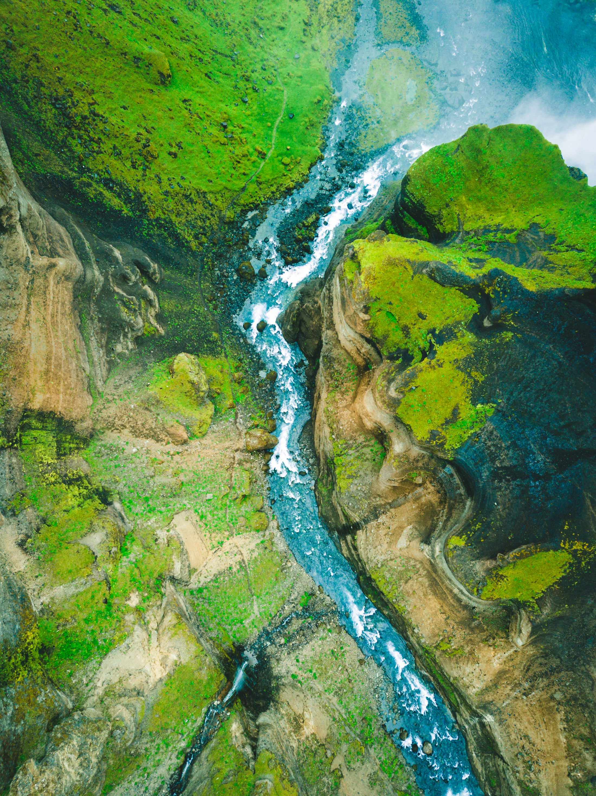
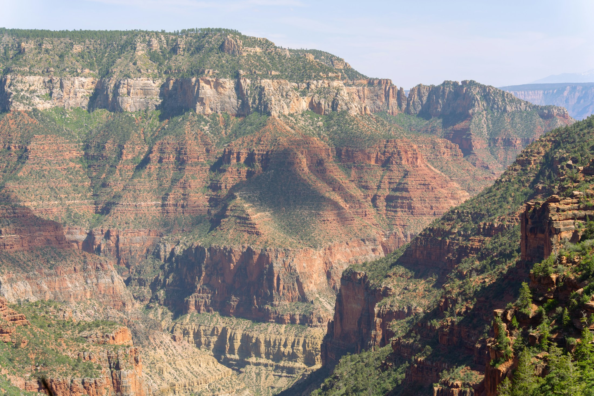

01
Arctic
Frozen systems at the edge of survival.
Explore Arctic ↗A field guide to the wild
Remote landscapes shaped by climate, time, and life—places where nature still sets the rules.
Discover the wild ↓01 / Wilderness
Wilderness is where natural systems continue to shape the landscape with limited human interference.
02 / Explore
01
Frozen systems at the edge of survival.
Explore Arctic ↗02
Ancient ecosystems shaped by rain, light, and time.
Explore Forest ↗03
Life persists where water is scarce and extremes rule.
Explore Desert ↗04
Life shaped by altitude, exposure, and isolation.
Explore Mountains ↗05
A vast living world extending far beneath the surface.
Explore Ocean ↗03 / The Wild
04 / Perspective
Wilderness is not defined by emptiness, but by natural systems that still operate on their own terms.
05 / Field journal
01 / Water in motion
Water follows the terrain, cuts channels, and carries sediment downstream.
Slopes, banks, and vegetation belong to the same catchment. Changes upstream can travel far beyond where they began.
Follow the water ↗

02 / Deep time
A canyon exposes layers of rock formed over time.
Deposition, uplift, weathering, and erosion continue to shape the landscape across different timescales.
Read the desert ↗06 / About
Wilderness is shaped by climate, geology, water, life, and time.
About UNTAMED ↗